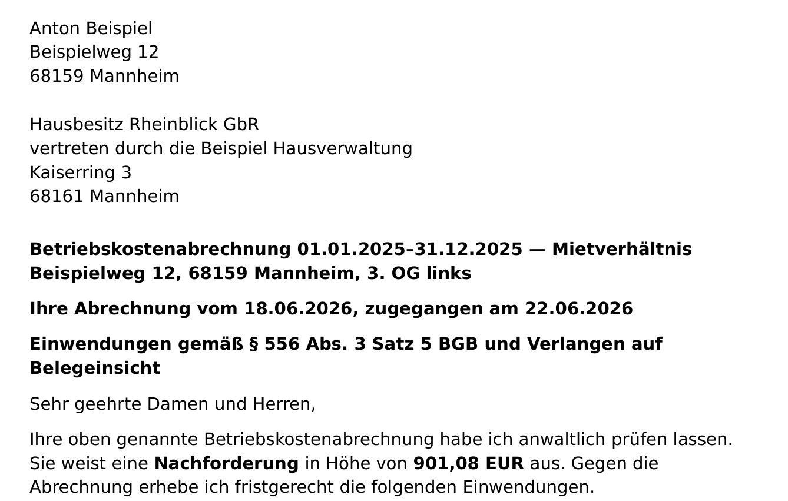

Dokument 1
Ihr Prüfergebnis
Punkt für Punkt: welche Positionen auffällig sind, warum sie es sind und welche Fristen für Sie laufen. In normalem Deutsch, nicht in Paragrafen.

 Rechtsanwalt Zahid AkcayKanzlei Akcay, Frankfurt am Main
Rechtsanwalt Zahid AkcayKanzlei Akcay, Frankfurt am Main
Laden Sie Abrechnung und Mietvertrag hoch. In wenigen Minuten sehen Sie, ob es Anhaltspunkte für Fehler gibt. Danach entscheiden Sie, ob ich als Rechtsanwalt prüfe.
Lohnt sich eine anwaltliche Prüfung, bestellen Sie sie zum Festpreis von 79,90 € inklusive Umsatzsteuer. Sie erhalten ein Prüfergebnis und ein fertiges Schreiben an Ihren Vermieter.
Nicht zur Hand?
Keine Unterlagen zur Hand? Kurze Nachricht schreiben
Vermutlich blockiert ein Adblocker oder Ihr Netzwerk den Anbieter. Sie können das Formular direkt öffnen, Ihre Angaben kommen genauso bei mir an.
Formular in neuem Tab öffnenUnterlagen gerade nicht zur Hand? Schreiben Sie mir unverbindlich, worum es geht.
So sieht Ihr Ergebnis aus. Die Vorprüfung dauert meist unter einer Minute.
So funktioniert’s
Sie brauchen weder Scanner noch Aktenordner — Fotos mit dem Handy reichen.
Das sollten Sie bereithalten: Ihre Nebenkostenabrechnung und Ihren Mietvertrag — jeweils alle Seiten, Handyfotos genügen.Nicht zur Hand?
Nebenkostenabrechnung und Mietvertrag hochladen oder abfotografieren, dazu Ihre E-Mail-Adresse. Alles Weitere ergibt sich aus Ihren Unterlagen. Die Vorprüfung kostet nichts und verpflichtet zu nichts. Ob Sie danach die anwaltliche Prüfung bestellen, entscheiden Sie.
Die Vorprüfung meldet Ihnen in wenigen Minuten, ob es Auffälligkeiten in Ihrer Abrechnung gibt — automatisch, ohne anwaltliche Prüfung, unverbindlich. Das Ergebnis erscheint direkt auf der Seite.
Wenn Sie möchten, bestellen Sie danach meine Prüfung. Sie erhalten sofort eine Bestellbestätigung per E-Mail.
Sie erhalten per E-Mail mein Prüfergebnis — welche Positionen angreifbar sind, welche Fristen gelten — und, wenn sich ein Widerspruch lohnt, das vorbereitete Schreiben an Ihren Vermieter.
Ihr Ergebnis
Kein Gutachten, das Sie erst übersetzen müssen — sondern das, womit Sie tatsächlich weiterkommen.
Dokument 1
Punkt für Punkt: welche Positionen auffällig sind, warum sie es sind und welche Fristen für Sie laufen. In normalem Deutsch, nicht in Paragrafen.
Dokument 2
Lohnt sich ein Widerspruch, lege ich ein auf Ihre Abrechnung abgestimmtes Schreiben an Ihren Vermieter bei — Sie prüfen es und schicken es ab.

Und wenn sich ein Schreiben nicht lohnt, sage ich Ihnen auch das — mit Begründung. Es gibt Fälle, in denen ein Widerspruch mehr Aufwand als Ertrag bringt oder Ihnen sogar schadet. Dann rate ich davon ab.
Aus meiner Prüfung
Ausgewählte Beispiele aus meinen Prüfungen von Abrechnungen für 2025. Jede Abrechnung ist anders: Die Fälle zeigen, was vorkommt, nicht, was Sie erwarten können.
Die kalten Betriebskosten waren nach Personen verteilt, der Mietvertrag sieht die Wohnfläche vor. Dazu kam ein Kürzungsrecht bei den Heizkosten. Der Vermieter hat beides anerkannt und eine korrigierte Abrechnung geschickt.
Abgerechnet wurde ab Mitte April, abgezogen waren aber nur die Vorauszahlungen ab Mai. Der Vermieter hat den fehlenden Anteil für April berücksichtigt: Statt einer Nachzahlung gab es ein Guthaben.
Heizung und Warmwasser laufen über eine gemeinsame Anlage. Die Wärme für das Warmwasser hätte mit einem Wärmezähler gemessen werden müssen, sie wurde aber nur rechnerisch ermittelt. Deshalb darf die Mieterin ihre Heiz- und Warmwasserkosten um 15 % kürzen.
Die Warmwasserkosten des Hauses waren vollständig nach Fläche verteilt. Die Heizkostenverordnung verlangt, dass mindestens die Hälfte nach gemessenem Verbrauch verteilt wird. Deshalb darf der Mieter seinen Warmwasseranteil kürzen, obwohl die Abrechnung schon mit einer Gutschrift endete.
Leistungsumfang
Die Punkte, an denen Nebenkostenabrechnungen typischerweise angreifbar sind — jedes Ergebnis von mir als Rechtsanwalt geprüft.
Hat Ihr Vermieter die Zwölfmonatsfrist gewahrt — und wie lange können Sie noch Einwendungen erheben?
Enthält die Abrechnung alle Mindestangaben — Gesamtkosten, Umlageschlüssel, Ihren Anteil, Ihre Vorauszahlungen?
Stimmen Summen, Anteile und der Abzug Ihrer Vorauszahlungen — oder ergibt die Nachforderung rechnerisch keinen Sinn?
Dürfen die abgerechneten Kostenarten überhaupt umgelegt werden — oder stecken Verwaltungs- und Instandhaltungskosten darin?
Wurden nur Kosten umgelegt, die Ihr Mietvertrag vereinbart — und stimmt der vereinbarte Schlüssel mit dem verwendeten überein?
Ist der Schlüssel — Wohnfläche, Personenzahl oder Verbrauch — korrekt auf Ihre Wohnung angewandt?
Wurden die Grundregeln der Heizkostenverordnung beachtet, etwa die verbrauchsabhängige Abrechnung?
Fallen einzelne Positionen aus dem Rahmen — ungewöhnlich hohe Beträge oder starke Sprünge gegenüber dem Vorjahr?
Offen gesagt
Ihre Abrechnung und Ihr Mietvertrag sind Vertrauenssache. Deshalb sage ich klar, wer prüft, was es kostet — und was mit Ihren Daten passiert.

Jede Abrechnung prüfe ich selbst. Die juristische Bewertung und die Verantwortung dafür liegen bei mir — als Rechtsanwalt, nicht als Portal.
Die Vorprüfung ist kostenlos, automatisch und unverbindlich. Ob Sie danach die anwaltliche Prüfung bestellen, entscheiden Sie — beim Hochladen zahlen Sie nichts. Alles Weitere unter Mandatsbedingungen.
Ihre Unterlagen unterliegen der anwaltlichen Verschwiegenheit und dienen nur Ihrer Prüfung. Für Formular, Server und technische Auswertung setze ich Dienstleister ein — dem stimmen Sie im Formular gesondert zu und können das jederzeit widerrufen. Details in der Datenschutzerklärung, Anbieterangaben im Impressum.
Noch Fragen?
Falls etwas offen bleibt: Schreiben Sie mir einfach an info@nebenkosten-anwalt.de.
Die Vorprüfung kostet nichts. Sie ist automatisch, ohne anwaltliche Prüfung, und verpflichtet Sie zu nichts.
Die anwaltliche Prüfung kostet 79,90 Euro — ein Endpreis einschließlich Umsatzsteuer, ein Abo gibt es nicht. Bezahlt wird erst, wenn Sie die Prüfung nach der Vorprüfung bestellen: bei der Bestellung, auf der sicheren Bezahlseite von Stripe — mit Karte, PayPal, Apple Pay oder Google Pay. Beim Hochladen zahlen Sie nichts.
Ihr Vermieter erstattet Ihnen diese Kosten in der Regel nicht — auch dann nicht, wenn er nachgibt. Alle Einzelheiten stehen unter Mandatsbedingungen.
Die Vorprüfung meldet Ihnen in wenigen Minuten, ob es Auffälligkeiten in Ihrer Abrechnung gibt — zum Beispiel Kosten, die nicht umgelegt werden dürfen, oder eine Frist, die überschritten sein könnte.
Die Vorprüfung ist keine anwaltliche Prüfung und keine Rechtsberatung. Sie kann Fehler übersehen oder falsch einordnen und nennt keine Beträge. Ob ein Punkt wirklich trägt, sage ich Ihnen erst in der anwaltlichen Prüfung — die bestellen Sie danach, wenn Sie möchten.
Ihre aktuelle Nebenkostenabrechnung und Ihren Mietvertrag — der Vertrag ist wichtig, weil dort Umlageschlüssel und vereinbarte Kostenarten stehen. Ein Handyfoto genügt, Sie brauchen keinen Scanner.
Weitere Belege brauchen Sie nicht vorab. Sollte die anwaltliche Prüfung einzelne Unterlagen zusätzlich erfordern, melde ich mich gezielt bei Ihnen.
Die Vorprüfung läuft automatisch. Die anwaltliche Prüfung übernehme ich als Rechtsanwalt: Die Auswertung wird technisch unterstützt, die juristische Bewertung und die Freigabe liegen bei mir — kein Prüfergebnis verlässt die Kanzlei ungeprüft.
Sie erhalten Ihr Prüfergebnis per E-Mail: Punkt für Punkt, welche Positionen auffällig sind und welche Fristen für Sie gelten.
Lohnt sich ein Widerspruch, lege ich ein auf Ihre Abrechnung abgestimmtes Schreiben an Ihren Vermieter bei, das Sie nur noch prüfen und abschicken müssen. Rate ich davon ab, sage ich Ihnen das ebenso deutlich — samt Begründung.
Nach dem Hochladen läuft die Vorprüfung sofort; das Ergebnis erscheint in wenigen Minuten auf der Seite — E-Mails bekommen Sie erst, wenn Sie bestellen.
Bestellen Sie die anwaltliche Prüfung, erhalten Sie sofort eine Bestellbestätigung per E-Mail. Vor Beginn gleiche ich Ihre Angaben mit meinen laufenden Fällen ab; bei einer Berührung sage ich ab und erstatte den Betrag. Das Prüfergebnis kommt per E-Mail, in der Regel innerhalb von 48 Stunden. Wenn eine Frist drängt, schreiben Sie das ins Formular.
Ja, das kann sich lohnen. Eine Zahlung bedeutet nicht, dass Sie die Abrechnung anerkannt haben. Für Einwendungen gilt grundsätzlich eine Frist von zwölf Monaten ab Zugang der Abrechnung — ob Sie noch in diesem Zeitfenster liegen, gehört zu den ersten Punkten, die ich prüfe.
Ich prüfe Fristen, formelle Richtigkeit, Umlegbarkeit der Positionen, den Abgleich mit Ihrem Mietvertrag, Verteilerschlüssel und die rechnerische Plausibilität — den vollen Umfang finden Sie oben unter Leistungsumfang.
Nicht enthalten sind die Vertretung gegenüber Ihrem Vermieter, die Prüfung oder Beantwortung seiner Antwort, weitere Korrespondenz, ein Gerichtsverfahren, eine Belegeinsicht vor Ort und die Prüfung der Messgeräte. Ob sich ein weiterer Schritt lohnt, sage ich Ihnen im Prüfergebnis — dafür braucht es ein neues Mandat, für die häufigsten Fälle zum Festpreis (99 Euro Erwiderung, 199 Euro Vertretung).
Ihre Unterlagen unterliegen der anwaltlichen Verschwiegenheit und werden nur für Ihre Prüfung verwendet — schon bei der Vorprüfung. Für Formular, Server und technische Auswertung setze ich Dienstleister ein, die in der Datenschutzerklärung genannt sind — dem stimmen Sie im Formular gesondert zu und können die Zustimmung jederzeit widerrufen.
Ihre Zahlungsdaten geben Sie direkt beim Zahlungsdienst Stripe ein; ich sehe sie nicht. Bestellen Sie nicht, lösche ich die Unterlagen der Vorprüfung nach 30 Tagen. Nach einer anwaltlichen Prüfung lösche ich sie auf dem Prüfsystem nach 90 Tagen; danach gelten die berufs- und steuerrechtlichen Aufbewahrungsfristen. Details stehen in der Datenschutzerklärung.
Das Mandat endet, sobald ich Ihnen die Schreiben zugesandt habe; die Antwort Ihres Vermieters ist darin nicht mehr enthalten. Wünschen Sie dazu meine Unterstützung — etwa eine Erwiderung oder die Vertretung gegenüber dem Vermieter —, schreiben Sie mir. Dafür schließen wir ein neues Mandat zum Festpreis: 99 Euro für eine aktualisierte Rechtseinschätzung mit dem Entwurf einer Erwiderung, die Sie selbst absenden, oder 199 Euro, wenn ich Sie gegenüber Ihrem Vermieter vertrete (bis zu drei Schreiben, streitiger Betrag bis 2.000 Euro). Beide Preise sind Endpreise inklusive Umsatzsteuer; darüber hinaus nenne ich Ihnen die Vergütung, bevor Sie mich beauftragen.
Wie Sie mich beauftragen, steht auf der Seite Ihr Vermieter hat geantwortet; die Einzelheiten in den Mandatsbedingungen.
Ja. Mit Ihrer Bestellung entsteht ein Mandat — begrenzt auf die Prüfung Ihrer Abrechnung und zwei Schreiben: meine Rechtseinschätzung an Sie und den Entwurf des Schreibens an Ihren Vermieter. Es endet, sobald ich Ihnen die Schreiben zugesandt habe; Folgekosten entstehen aus diesem Mandat nicht. Als Verbraucher können Sie die Bestellung innerhalb von 14 Tagen widerrufen. Mit der Bestellung verlangen Sie ausdrücklich, dass ich sofort beginne, und bestätigen, dass Ihr Widerrufsrecht erlischt, sobald die Prüfung vollständig erbracht ist; widerrufen Sie vorher, erstatte ich den Betrag abzüglich eines Anteils für die bis dahin erbrachte Leistung.
Details stehen in der Widerrufsbelehrung.
Handyfotos genügen. Die Vorprüfung kostet nichts — und Sie entscheiden danach, ob ich prüfe.
Abrechnung prüfen lassen